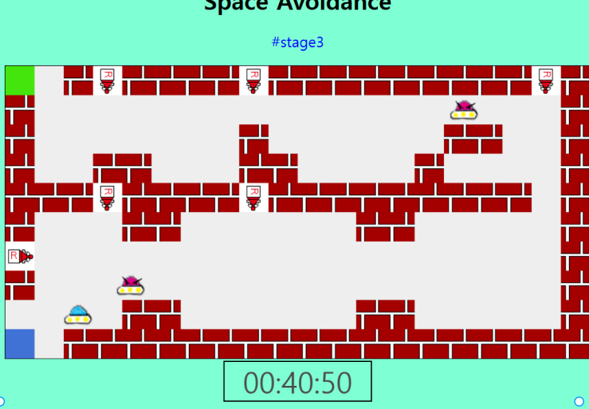

개발
저는 고등학교 1학년 때 부터 코딩을 시작했습니다. 처음에 C를 배우고, 이후 javascript를 배워 게임도 만들어보았습니다. (지금은 안 한지 너무 오래돼서 다 까먹었습니다 ㅠㅠㅠ)
이후에는 C#, java 등을 배우며 Window form을 만드는 것에 관심을 가졌고, 대학에 진학해서는 Unity를 공부해서 게임개발도 배웠습니다.

작년 2학기 알파프로젝트를 하면서 Spring boot로 백앤드를 맡아 금연 어플도 개발해 보았습니다. 멋사에서 활동하며 더 발전하고 싶습니다.